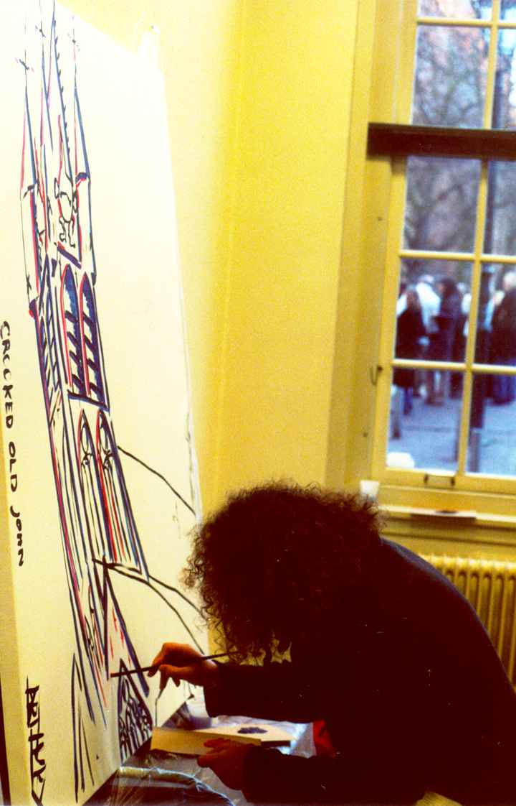

Crooked Old John
painted by ArthurX
Crooked Old John
painted by ArthurX.
Commissioned by GeoDelta, Delft.
See the painting as it grows.
Delft, November 23th 2006.
In the center of Delft rises the stately tower of the Oude Jan church.
It was build straight, but during construction it sunk towards the canal.
The most upper part of the tower is straight again.
The late November sun is setting.
The perspective of the painting is looking out of the room of the CEO up to the tower.
A room with a view.
And in the beginning .....
.....God created Black.
Nothing can start without blue.
...If God created the God Earth and God Sun.
.....He must have glued them in blue of the Holy Sky.
And you know,
Blue is quite sticky,
Especially if it's wet.

In the Old John, you can find the graves of
Johannes Vermeer, Painter
Antoni van Leeuwenhoek, Scientist
Piet Hein, Pirate
Elisabeth Morgan, daughter of Marnix van St Aldegonde.
Quite important people with sculptured sacrophages.
(No, not Elizabeth,
she was only a young dieing, beautiful girl)

The Trinitasclock (Anno 1570) is the most importand clock of the tower.
The Clock weights almost 9000 kilo and has a diameter of 2,3 meter.
It's a real Big Bang creator.
You will hear the Trinitasclock only at the funeral of the Royal Family.
Otherwise the Tower would collapse under the weight of the trembling of the clock.
Business as usual.
The show must go on.
"Hundred phone calls a day,
keeps the growing pain away",
A close scrutiny of the procedings of the artist.
(Everybody wants explanations.
It's an art in itself.)
The End
The painter and the finished painting
Breakie,Breakie
All photo's by Elizabeth.